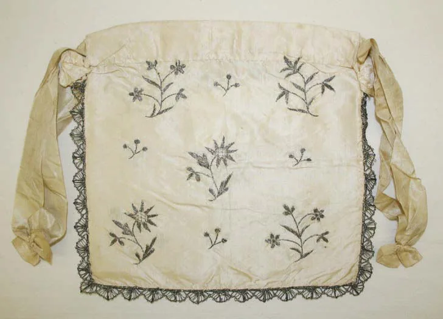

The first thread.
A small workshop. One table by the window. The first lesson is to know the material and leave in it only what is needed.
Things change. Hands remember.
Open the house history
Four chapters of an invented house history. Real studies of historic objects — about patience, material and the memory of hands.
A small workshop. One table by the window. The first lesson is to know the material and leave in it only what is needed.
A new generation takes on more than the tools. It inherits the slow stitch, care for the edge and respect for an object someone will carry for a long time.
An old drawing becomes a new form. The folding case appears — a clean surface, a strong seam and room for a personal mark.
The story goes on with your initials. Not a mass logo, but a small reminder of who owns this object and whose time it will keep.
A small mark that only you will recognise.
Illustration of the original case.
The colour shows the embroidery thread.
Wipe it with a dry, soft cloth. Keep it away from soaking and direct heat. These are general notes for a demonstration object, not restoration advice for historic pieces.
Keep it dry and out of direct sun. For real care, follow the label of the actual product.
In this demonstration, change the initials, colour or place and prepare the summary again. No real service is switched on.